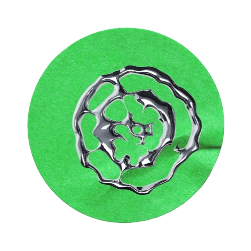
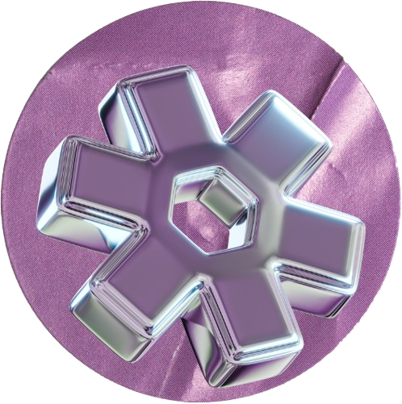
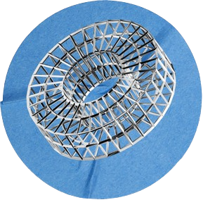
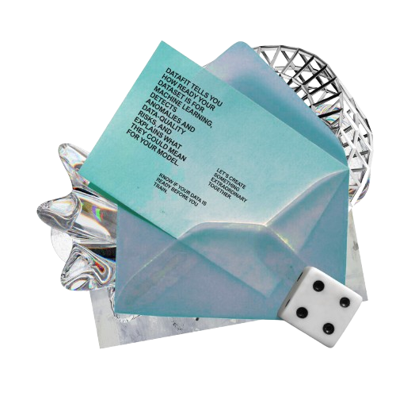

Most data-quality tools stop at "your dataset has 18:1 class imbalance." That's a statistic, not an answer. DataFit connects the problem to its likely consequence for the ML task you're actually trying to do, and where useful, runs a lightweight experiment to show real evidence of the impact, rather than asking you to take its word for it.
DataFit never decides your data is "wrong" on your behalf. It surfaces unusual or risky patterns and helps you judge whether they matter, because an unusual reading might be completely legitimate, and no automated tool should quietly overwrite it.
